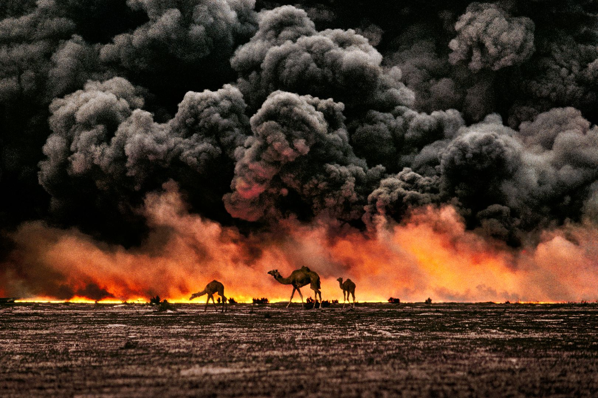

Théâtre 01
Moyen-Orient
Le théâtre des recompositions de l'après-2011 : fronts confessionnels, influence iranienne, reconstruction syrienne, guerre du Yémen et tensions au Liban-Sud. L'historique couvre dix périodes, de 2005 à aujourd'hui.
- Iraq · Syrie · Liban · Yémen
